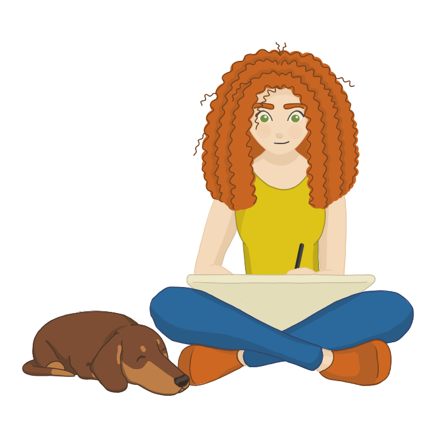

Hi, I'm Cat.
I just graduated in Computer Science and Theatre from the University of Glasgow. I know it sounds like a weird combination, but I believe that art and technology are tightly linked and can enhance each other. I am a front-end designer, a developer, an artist, and a storyteller.
